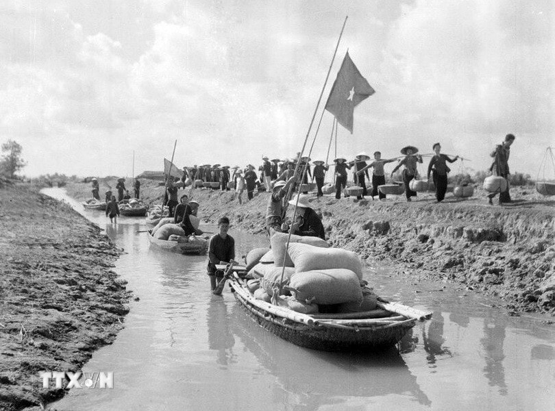

05/09 – 10/09/1960 tại Thủ đô Hà Nội
Đất nước tạm thời chia cắt
Đất nước tạm thời bị chia cắt làm hai miền. Miền Bắc đã hoàn thành khôi phục kinh tế (1954–1957) và cải tạo Xã hội Chủ nghĩa (1958–1960). Miền Nam đang chìm trong ách thống trị của đế quốc Mỹ và chính quyền Sài Gòn, phong trào cách mạng chuyển sang thế tiến công (sau Đồng Khởi 1960).
Hai nhiệm vụ chiến lược song song
Đại hội đã đề ra đường lối tiến hành đồng thời hai nhiệm vụ chiến lược có quan hệ mật thiết với nhau:
- Ở miền Bắc: Tiến hành cách mạng Xã hội Chủ nghĩa, trọng tâm là công nghiệp hóa Xã hội Chủ nghĩa, xây dựng miền Bắc thành "hậu phương lớn" vững mạnh.
- Ở miền Nam: Tiến hành cách mạng dân tộc dân chủ nhân dân, giải phóng miền Nam khỏi ách thống trị của đế quốc Mỹ và tay sai, thực hiện hòa bình thống nhất nước nhà, làm tròn nhiệm vụ của "tiền tuyến lớn".
Kế hoạch 5 năm lần thứ nhất (1961–1965)
Thông qua Kế hoạch 5 năm lần thứ nhất nhằm bước đầu xây dựng cơ sở vật chất – kỹ thuật của Chủ nghĩa Xã hội. Ưu tiên phát triển công nghiệp nặng một cách hợp lý, đồng thời ra sức phát triển nông nghiệp và công nghiệp nhẹ.
Ngọn đuốc soi đường cho dân tộc
Đây là "Đại hội xây dựng Chủ nghĩa Xã hội ở miền Bắc và đấu tranh hòa bình thống nhất nước nhà", là ngọn đuốc soi đường cho cả dân tộc trong suốt thời kỳ chống Mỹ cứu nước.
Đại hội III và khí thế toàn dân vừa sản xuất, vừa chiến đấu

Nguồn tư liệu tham khảo: VietnamPlus - Đại hội Đảng lần thứ III.